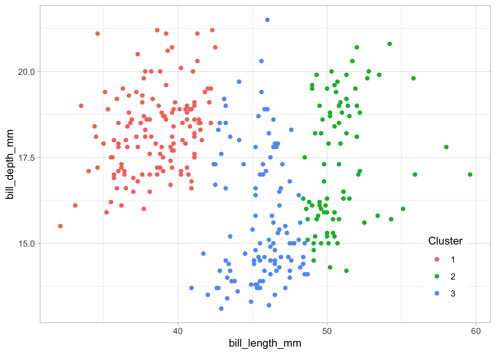
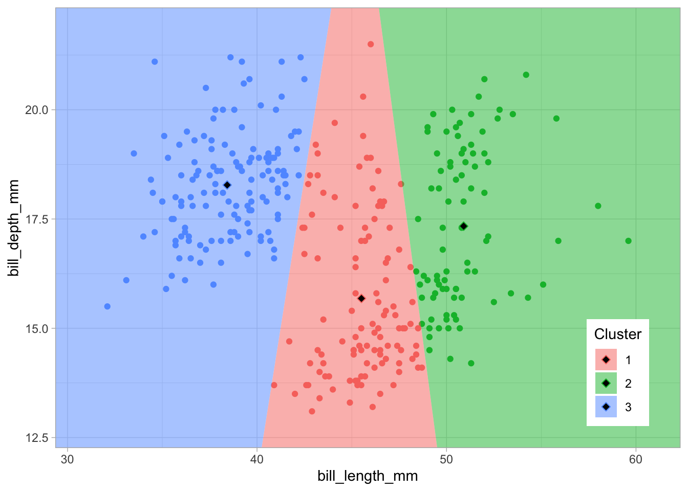

In this lab, you will play with unsupervised classification techniques while working with ecological community datasets.
Comparing species counts between sites using distance metrics:
Euclidean calculates the distance between a virtualized space using Pythagorean theorem.
Manhattan calculates integer “around the block” difference.
Bray-Curtis dissimilarity is based on the sum of lowest counts of shared species between sites over the sum of all species. A dissimilarity value of 1 is completely dissimilar, i.e. no species shared. A value of 0 is completely identical.
Clustering
K-Means clustering with function kmeans() given a pre-assigned number of clusters assigns membership centroid based on reducing within cluster variation.
Hierarchical clustering allows for a non-specific number of clusters.
Agglomerative hierarchical clustering, such as with diana(), agglomerates as it builds the tree. It is good at identifying small clusters.
Divisive hierarchical clustering, such as with agnes(), divides as it builds the tree. It is good at identifying large clusters.
Dendrograms visualize the branching tree.
Ordination (coming Monday)
Clustering associates similar data points with each other, adding a grouping label. It is a form of unsupervised learning since we don’t fit the model based on feeding it a labeled response (i.e. \(y\)).
Source: K Means Clustering in R | DataScience+
In k-means clustering, the number of clusters needs to be specified. The algorithm randomly assigns each observation to a cluster, and finds the centroid of each cluster. Then, the algorithm iterates through two steps:
These two steps are repeated until the within cluster variation cannot be reduced any further. The within cluster variation is calculated as the sum of the euclidean distance between the data points and their respective cluster centroids.
iris dataset# load R packages
librarian::shelf(
dplyr, DT, ggplot2, tibble)##
## The 'cran_repo' argument in shelf() was not set, so it will use
## cran_repo = 'https://cran.r-project.org' by default.
##
## To avoid this message, set the 'cran_repo' argument to a CRAN
## mirror URL (see https://cran.r-project.org/mirrors.html) or set
## 'quiet = TRUE'.# set seed for reproducible results
set.seed(42)
# load the dataset
data("iris")
# look at documentation in RStudio
if (interactive())
help(iris)
# show data table
datatable(iris)# plot petal length vs width, species naive
ggplot(
iris, aes(Petal.Length, Petal.Width)) +
geom_point()# plot petal length vs width, color by species
legend_pos <- theme(
legend.position = c(0.95, 0.05),
legend.justification = c("right", "bottom"),
legend.box.just = "right")
ggplot(
iris, aes(Petal.Length, Petal.Width, color = Species)) +
geom_point() +
legend_posiris using kmeans()# cluster using kmeans
k <- 3 # number of clusters
iris_k <- kmeans(
iris %>%
select(Petal.Length, Petal.Width),
centers = k)
# show cluster result
iris_k## K-means clustering with 3 clusters of sizes 50, 52, 48
##
## Cluster means:
## Petal.Length Petal.Width
## 1 1.462000 0.246000
## 2 4.269231 1.342308
## 3 5.595833 2.037500
##
## Clustering vector:
## [1] 1 1 1 1 1 1 1 1 1 1 1 1 1 1 1 1 1 1 1 1 1 1 1 1 1 1 1 1 1 1 1 1 1 1 1 1 1
## [38] 1 1 1 1 1 1 1 1 1 1 1 1 1 2 2 2 2 2 2 2 2 2 2 2 2 2 2 2 2 2 2 2 2 2 2 2 2
## [75] 2 2 2 3 2 2 2 2 2 3 2 2 2 2 2 2 2 2 2 2 2 2 2 2 2 2 3 3 3 3 3 3 2 3 3 3 3
## [112] 3 3 3 3 3 3 3 3 2 3 3 3 3 3 3 2 3 3 3 3 3 3 3 3 3 3 3 2 3 3 3 3 3 3 3 3 3
## [149] 3 3
##
## Within cluster sum of squares by cluster:
## [1] 2.02200 13.05769 16.29167
## (between_SS / total_SS = 94.3 %)
##
## Available components:
##
## [1] "cluster" "centers" "totss" "withinss" "tot.withinss"
## [6] "betweenss" "size" "iter" "ifault"# compare clusters with species (which were not used to cluster)
table(iris_k$cluster, iris$Species)##
## setosa versicolor virginica
## 1 50 0 0
## 2 0 48 4
## 3 0 2 46Question: How many observations could be considered “misclassified” if expecting petal length and width to differentiate between species?
# extract cluster assignment per observation
Cluster = factor(iris_k$cluster)
ggplot(iris, aes(Petal.Length, Petal.Width, color = Cluster)) +
geom_point() +
legend_pos
irisThis form of clustering assigns points to the cluster based on nearest centroid. You can see the breaks more clearly with a Voronoi diagram.
librarian::shelf(ggvoronoi, scales)##
## The 'cran_repo' argument in shelf() was not set, so it will use
## cran_repo = 'https://cran.r-project.org' by default.
##
## To avoid this message, set the 'cran_repo' argument to a CRAN
## mirror URL (see https://cran.r-project.org/mirrors.html) or set
## 'quiet = TRUE'.# define bounding box for geom_voronoi()
box <- tribble(
~Petal.Length, ~Petal.Width, ~group,
1, 0.1, 1,
1, 2.5, 1,
7, 2.5, 1,
7, 0.1, 1,
1, 0.1, 1) %>%
data.frame()
# cluster using kmeans
k <- 3 # number of clusters
iris_k <- kmeans(
iris %>%
select(Petal.Length, Petal.Width),
centers = k)
# extract cluster assignment per observation
Cluster = factor(iris_k$cluster)
# extract cluster centers
ctrs <- as.data.frame(iris_k$centers) %>%
mutate(
Cluster = factor(1:k))
# plot points with voronoi diagram showing nearest centroid
ggplot(iris, aes(Petal.Length, Petal.Width, color = Cluster)) +
geom_point() +
legend_pos +
geom_voronoi(
data = ctrs, aes(fill=Cluster), color = NA, alpha=0.5, outline = box) +
geom_point(
data = ctrs, pch=23, cex=2, fill="black")
Task: Show the Voronoi diagram for fewer (k=2) and more (k=8) clusters to see how assignment to cluster centroids work.
Next, you’ll cluster sites according to species composition. You’ll use the dune dataset from the vegan R package.
dune datasetlibrarian::shelf(
cluster, vegan)##
## The 'cran_repo' argument in shelf() was not set, so it will use
## cran_repo = 'https://cran.r-project.org' by default.
##
## To avoid this message, set the 'cran_repo' argument to a CRAN
## mirror URL (see https://cran.r-project.org/mirrors.html) or set
## 'quiet = TRUE'.# load dune dataset from package vegan
data("dune")
# show documentation on dataset if interactive
if (interactive())
help(dune)Question: What are the rows and columns composed of in the dune data frame?
sitesBefore we calculate ecological distance between sites for dune, let’s look at these metrics with a simpler dataset, like the example given in Chapter 8 by Kindt and Coe (2005).
sites <- tribble(
~site, ~sp1, ~sp2, ~sp3,
"A", 1, 1, 0,
"B", 5, 5, 0,
"C", 0, 0, 1) %>%
column_to_rownames("site")
sites## sp1 sp2 sp3
## A 1 1 0
## B 5 5 0
## C 0 0 1sites_manhattan <- vegdist(sites, method="manhattan")
sites_manhattan## A B
## B 8
## C 3 11sites_euclidean <- vegdist(sites, method="euclidean")
sites_euclidean## A B
## B 5.656854
## C 1.732051 7.141428sites_bray <- vegdist(sites, method="bray")
sites_bray## A B
## B 0.6666667
## C 1.0000000 1.0000000sitesLet’s take a closer look at the Bray-Curtis Dissimilarity distance:
\[ B_{ij} = 1 - \frac{2C_{ij}}{S_i + S_j} \]
\(B_{ij}\): Bray-Curtis dissimilarity value between sites \(i\) and \(j\).
1 = completely dissimilar (no shared species); 0 = identical.
\(C_{ij}\): sum of the lesser counts \(C\) for shared species common to both sites \(i\) and \(j\)
\(S_{i OR j}\): sum of all species counts \(S\) for the given site \(i\) or \(j\)
So to calculate Bray-Curtis for the example sites:
\(B_{AB} = 1 - \frac{2 * (1 + 1)}{2 + 10} = 1 - 4/12 = 1 - 1/3 = 0.667\)
\(B_{AC} = 1 - \frac{2 * 0}{2 + 1} = 1\)
\(B_{BC} = 1 - \frac{2 * 0}{10 + 1} = 1\)
duneSee text to accompany code: HOMLR 21.3.1 Agglomerative hierarchical clustering.
# Dissimilarity matrix
d <- vegdist(dune, method="bray")
dim(d)## [1] 20 20as.matrix(d)[1:5, 1:5]## 1 2 3 4 5
## 1 0.0000000 0.4666667 0.4482759 0.5238095 0.6393443
## 2 0.4666667 0.0000000 0.3414634 0.3563218 0.4117647
## 3 0.4482759 0.3414634 0.0000000 0.2705882 0.4698795
## 4 0.5238095 0.3563218 0.2705882 0.0000000 0.5000000
## 5 0.6393443 0.4117647 0.4698795 0.5000000 0.0000000# Hierarchical clustering using Complete Linkage
hc1 <- hclust(d, method = "complete" )
# Dendrogram plot of hc1
plot(hc1, cex = 0.6, hang = -1)# Compute agglomerative clustering with agnes
hc2 <- agnes(dune, method = "complete")
# Agglomerative coefficient
hc2$ac## [1] 0.5398129# Dendrogram plot of hc2
plot(hc2, which.plot = 2)# methods to assess
m <- c( "average", "single", "complete", "ward")
names(m) <- c( "average", "single", "complete", "ward")
# function to compute coefficient
ac <- function(x) {
agnes(dune, method = x)$ac
}
# get agglomerative coefficient for each linkage method
purrr::map_dbl(m, ac)## average single complete ward
## 0.4067153 0.2007896 0.5398129 0.6939994# Compute ward linkage clustering with agnes
hc3 <- agnes(dune, method = "ward")
# Agglomerative coefficient
hc3$ac## [1] 0.6939994# Dendrogram plot of hc3
plot(hc3, which.plot = 2)duneSee text to accompany code: HOMLR 21.3.2 Divisive hierarchical clustering.
# compute divisive hierarchical clustering
hc4 <- diana(dune)
# Divise coefficient; amount of clustering structure found
hc4$dc## [1] 0.5287677See text to accompany code: HOMLR 21.4 Determining optimal clusters.
librarian::shelf(factoextra)##
## The 'cran_repo' argument in shelf() was not set, so it will use
## cran_repo = 'https://cran.r-project.org' by default.
##
## To avoid this message, set the 'cran_repo' argument to a CRAN
## mirror URL (see https://cran.r-project.org/mirrors.html) or set
## 'quiet = TRUE'.# Plot cluster results
p1 <- fviz_nbclust(dune, FUN = hcut, method = "wss", k.max = 10) +
ggtitle("(A) Elbow method")
p2 <- fviz_nbclust(dune, FUN = hcut, method = "silhouette", k.max = 10) +
ggtitle("(B) Silhouette method")
p3 <- fviz_nbclust(dune, FUN = hcut, method = "gap_stat", k.max = 10) +
ggtitle("(C) Gap statistic")
# Display plots side by side
gridExtra::grid.arrange(p1, p2, p3, nrow = 1)See text to accompany code: HOMLR 21.5 Working with dendrograms.
# Construct dendorgram for the Ames housing example
hc5 <- hclust(d, method = "ward.D2" )
dend_plot <- fviz_dend(hc5)## Warning: `guides(<scale> = FALSE)` is deprecated. Please use `guides(<scale> =
## "none")` instead.dend_data <- attr(dend_plot, "dendrogram")
dend_cuts <- cut(dend_data, h = 8)
fviz_dend(dend_cuts$lower[[2]])## Warning: `guides(<scale> = FALSE)` is deprecated. Please use `guides(<scale> =
## "none")` instead.# Ward's method
hc5 <- hclust(d, method = "ward.D2" )
# Cut tree into 4 groups
k = 4
sub_grp <- cutree(hc5, k = k)
# Number of members in each cluster
table(sub_grp)## sub_grp
## 1 2 3 4
## 8 6 4 2# Plot full dendogram
fviz_dend(
hc5,
k = k,
horiz = TRUE,
rect = TRUE,
rect_fill = TRUE,
rect_border = "jco",
k_colors = "jco")## Warning: `guides(<scale> = FALSE)` is deprecated. Please use `guides(<scale> =
## "none")` instead.